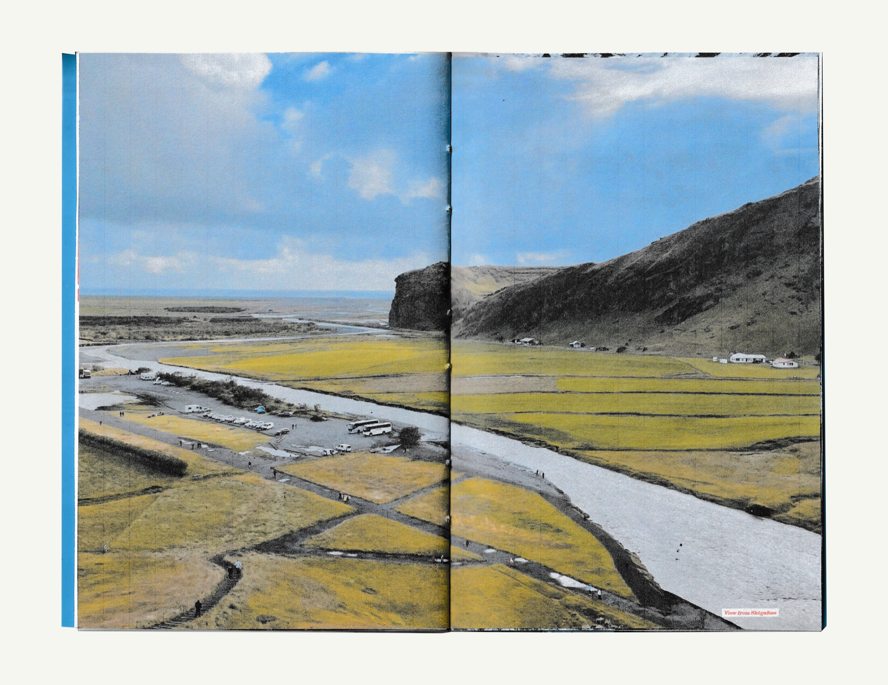
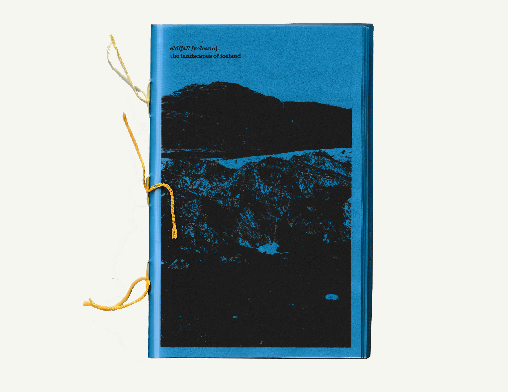
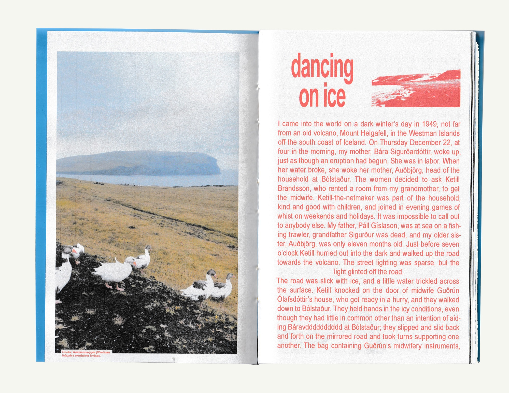
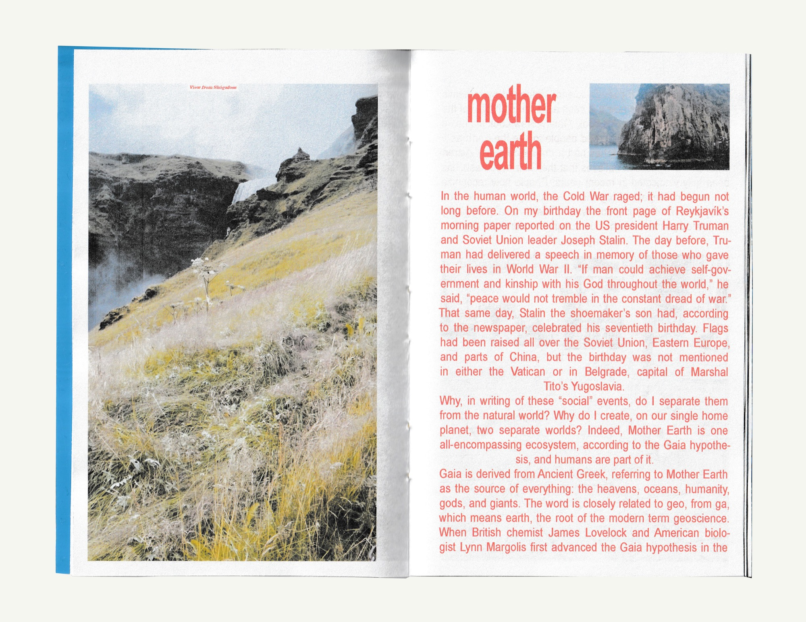
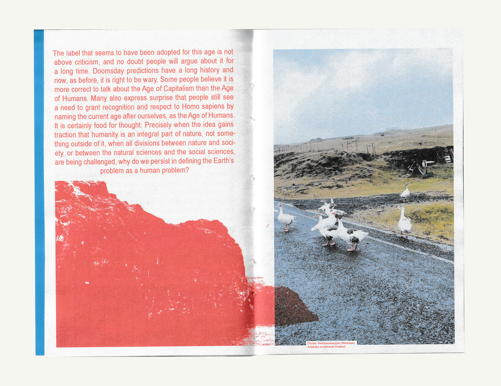
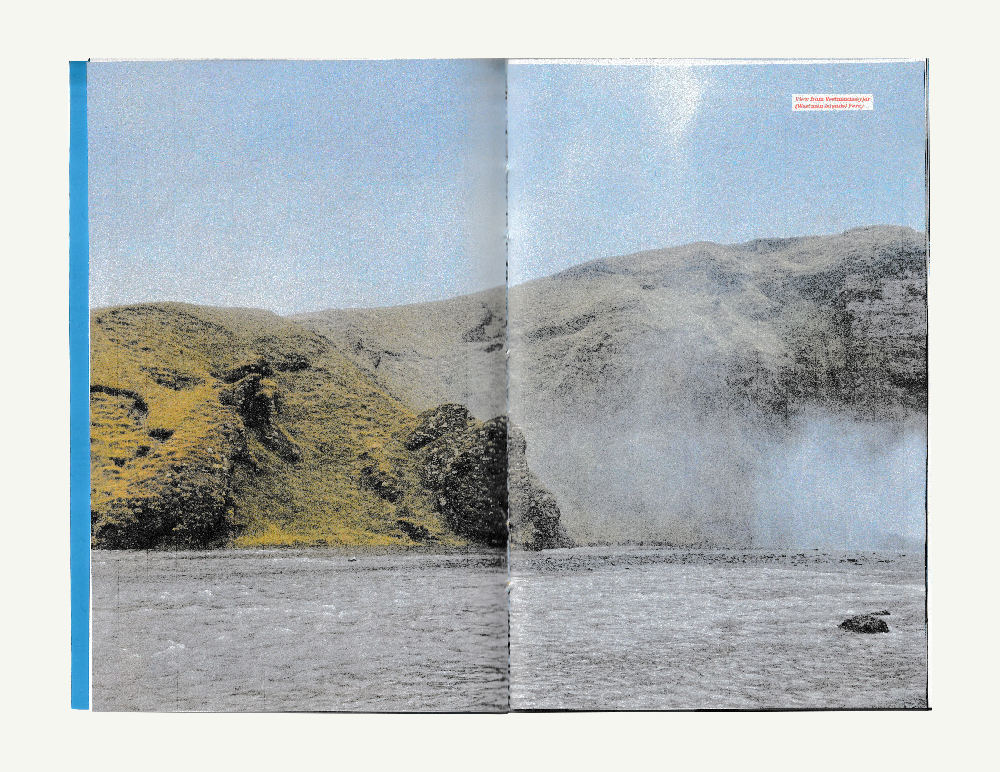
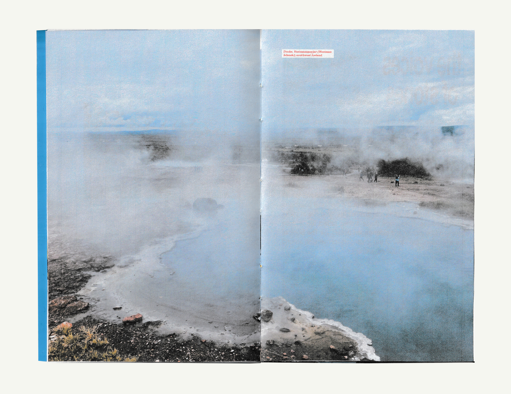
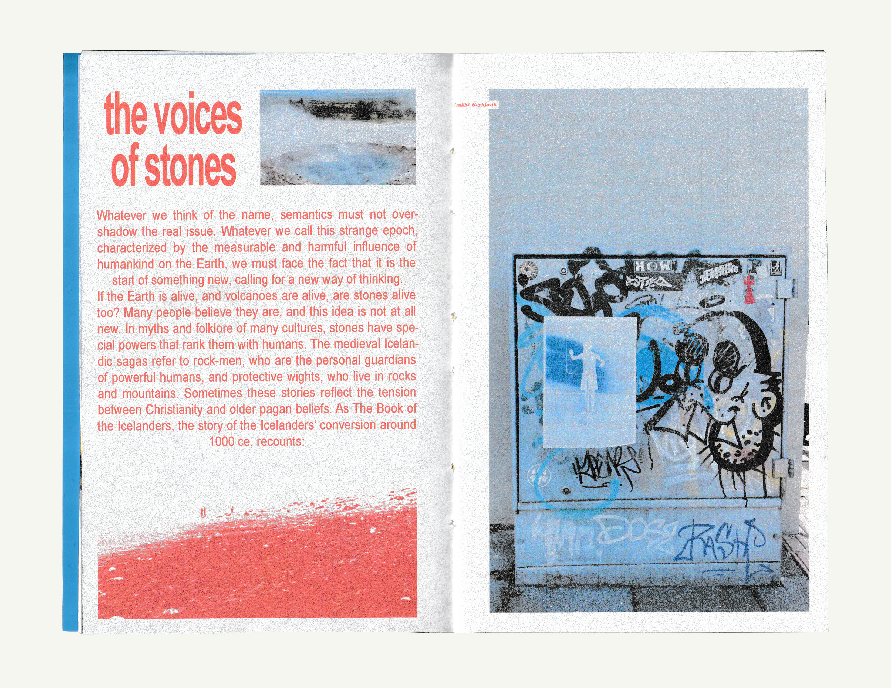
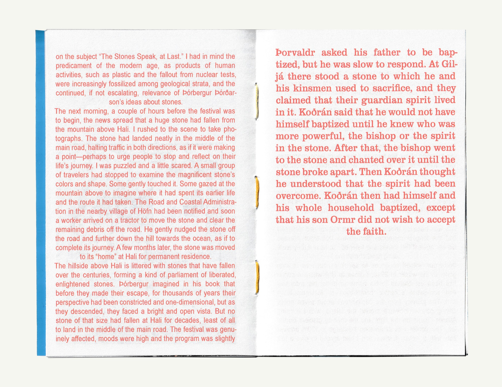
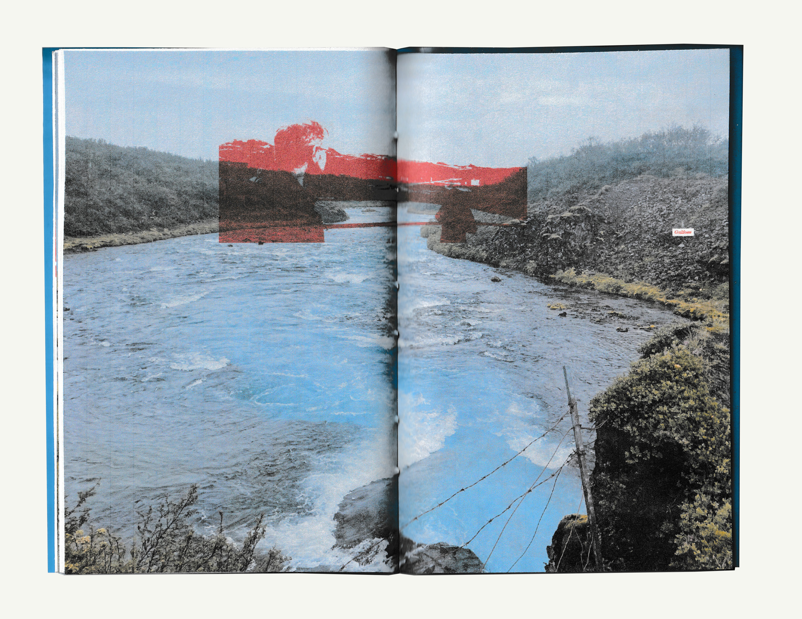

eldfjall:
the landscapes of iceland
the landscapes of iceland

Photo zine featuring a chapter from Gísli Pálsson’s 2020 memoir On Top of Glowing Magma. Photos by Maeve Collins, taken in southwest Iceland and the Vestmannaeyjar (Westman Islands) archipelago in August 2025. I was inspired to document these landscapes after visiting the Eldheimar Museum. Focuses on the devastating 1973 eruption of the Eldfell volcano, and Iceland’s ever-changing tectonic landscape.
The idea that the Earth is alive is not new.
It may, in fact, be as old an idea as humankind itself.








